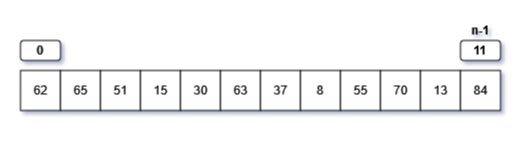
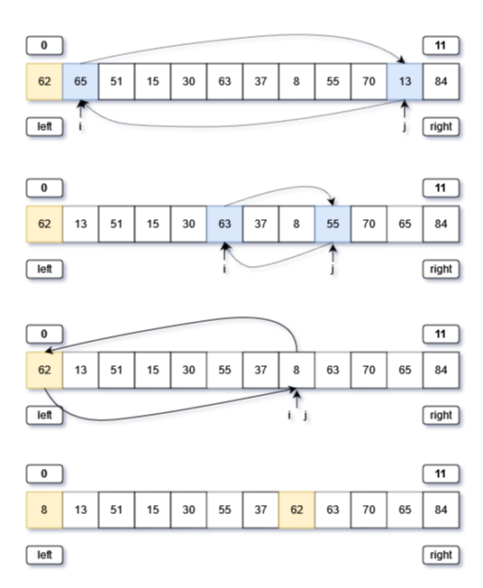

Python排序算法-快速排序

快排是一种不断划分左右子列表，通过递归方式实现的排序算法。
- 实现方式

划分左右子列表，可以理解为学生排队，在队伍中选择一个标杆（基数)，比基数的站到左边，比基数高的站到右边，然后通过向下递归的方式，对左、右子列表重复上述步骤，直到列表（队伍）中只有一个人时，列表向上返回，整个队伍全部排序完毕。
- 列表的长度为n，即列表所有元素的表示范围为：
[0,n-1]- 选取最左侧（nums[left]）的元素作为基数（标杆），先从最右侧j查找比基数小的元素，再从左侧i起查找比基数大的元素，然后交换这两个元素
- 重复以上步骤，直到
i==j，此时两边均查找完毕，然后将基数（nums[left]）与i所处（nums[i]）互换，即实现了：左子列表<nums[i]<右子列表- 然后使用递归的方式处理左右子列表，当子列表中只有一个元素是返回，即
if left >= right:
- 需要注意的两点
- 选择最左侧元素为列表的基数时，必须先从右侧查找比基数小的元素，不能先从左侧查找比基数大的元素。如：
[0, 0, 0, 0, 1]，如果先“从左向右查找”，标杆划分后数组为[1, 0, 0, 0, 0]，这个结果是不正确的。- 因为从左侧先查找时，最终
i == j==4是，会出现nums[j] == nums[i] > nums[left]，而在while结束后，需要条换nums[left]与nums[i]，此时将列表中的1调换至最左侧。- 在排序算法quick_sort中，递归处理左右子列表，输入的参数，不包含i位置，因此左子列表的最右侧下标为base_index - 1，右子列表的最左侧下标为base_index + 1
# 快速排序算法
# partition将列表划分为两个部分：左子列表<基数<右子列表
def partition(nums: list[int], left: int, right: int) -> int:
i, j = left, right
# 选定最列表最左侧元素为基数
base = nums[left]
while i < j:
# 这里先从右至左寻找小于base的值，再从左至右查找大于base的值，顺序有先后
while i < j and nums[j] >= base:
j -= 1
while i < j and nums[i] <= base:
i += 1
nums[i], nums[j] = nums[j], nums[i]
# 将基数与i互换，使得左列表<基数<右列表
nums[left], nums[i] = nums[i], nums[left]
return i
# 使用递归方式，不断将列表划分为更小更小的列表，直到列表只有一个元素，达到边界（终止）条件
def quick_sort(nums: list[int], left: int, right: int):
if left >= right:
return
base_index = partition(nums, left, right)
quick_sort(nums, left, base_index - 1)
quick_sort(nums, base_index + 1, right)
if __name__ == "__main__":
nums = [62, 65, 51, 15, 30, 63, 37, 8, 55, 70, 13, 84, 46, 44, 86, 11, 91, 10, 47, 3, 96, 9, 36, 54, 24, 55, 72,
29, 45]
# nums=[2, 4, 1, 0, 3, 5]
quick_sort(nums, 0, len(nums) - 1)
print(nums)